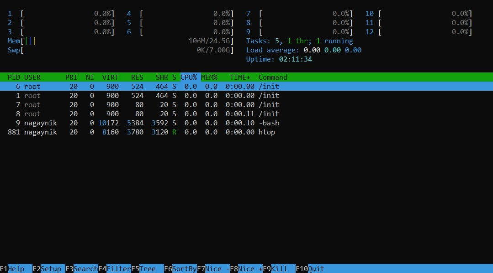
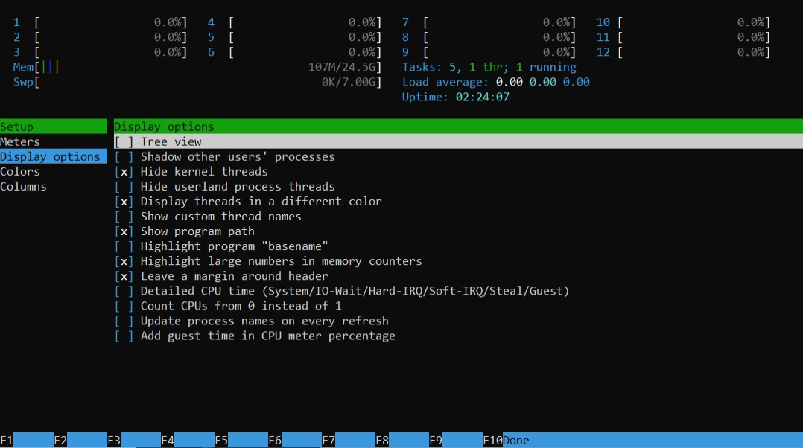
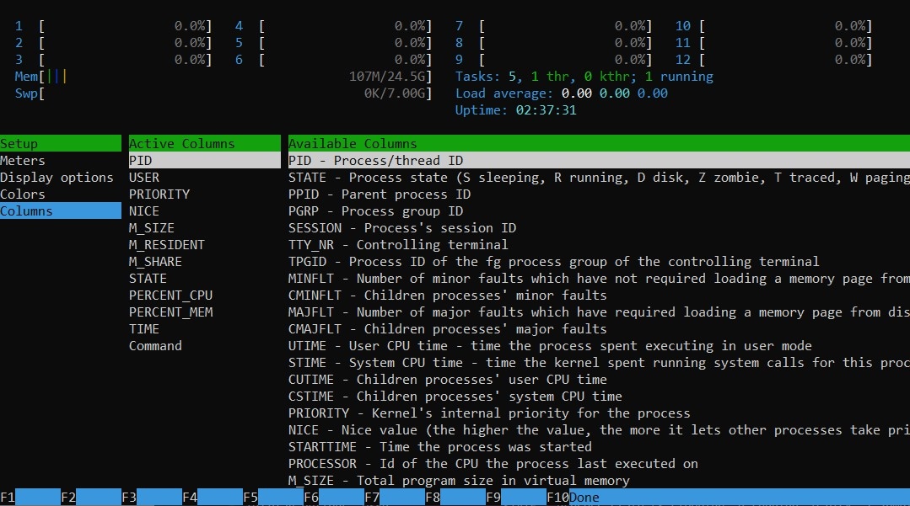

HTOP
htop мощная утилита для просмотра запущенных процессов в Linux. Пользоваться ею очень удобно.
Здесь поддерживаются не только горячие клавиши, но и управление мышью.
А ещё она выводит всё в цвете, поэтому смотреть на данные намного приятнее. Для установки программы выполните:
sudo apt install htop
Для того чтобы запустить выполните в терминале:
htop

Вот значение основных колонок в выводе утилиты:
- PID - идентификатор процесса.
- USER - имя пользователя, от имени которого выполняется процесс.
- PR - приоритет планировщика, установленный для процесса.
- NI - рекомендуемый приоритет процесса. Это значение можно менять, может не совпадать с реальным приоритетом планировщика.
- VIRT - всё, что находится в памяти, используется или зарезервировано для использования.
- RES - всё, что находится в оперативной памяти и относится к процессу. Расшифровывается как Resident Memory Size, указывается в килобайтах.
- SHR - часть памяти из RES, которую занимают ресурсы, доступные для использования другим процессам. Расшифровывается как Shared Memory Size.
- S - состояние процесса: D - ожидает завершения операции, R - запущен, S - спит, T - остановлен, t - остановлен отладчиком, Z - зомби.
- %CPU - процент использования ресурсов процессора.
- %MEM - процент использования ресурсов оперативной памяти на основе колонки RES.
- TIME - обще процессорное время, которое процесс использовал с момента запуска.
- COMAND - команда, с помощью которой был запущен процесс.
Для настройки выводимых данных нажмите кнопку F2, затем перейдите в раздел Display Options:

Для того чтобы настроить какие колонки будут отображаться используйте пункт меню Columns:

Тут вы можете выбрать какие колонки отображать, а какие нет, а также можете настроить их порядок.